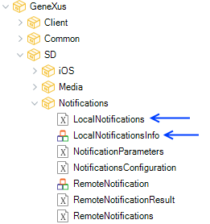
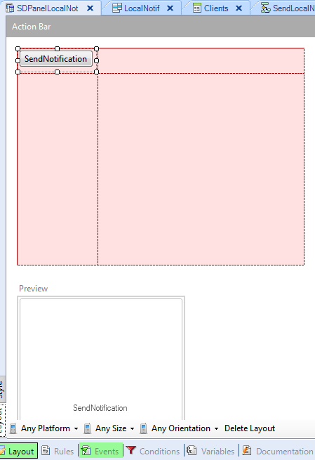
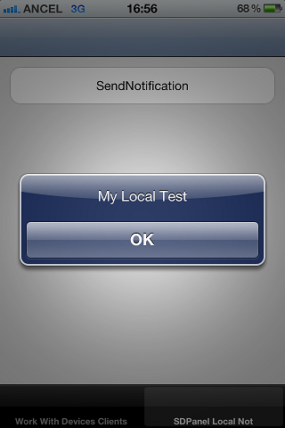
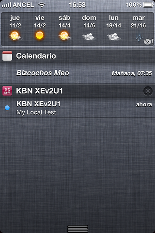

The LocalNotifications external object enable your app to alert users of scheduled events or alarms in the background, with no servers required as in Push Notifications in Smart Devices Application. This document is a brief guide of how to use Local Notifications in GeneXus for Smart Devices. Step 1: Checking the objects that will let me add Local NotificationsThere are two objects that are going to be used to enable Local Notifications on the GeneXus Core module.  LocalNotifications structured data types LocalNotifications external object Step 2: Programming the Local NotificationsTo make them work just to create the following Procedure (e.g: named "SendLocalNotificationsServer"). In this example, we are creating this procedure to load the SDTLocal Notifications, but this can be done differently because it is not compulsory to do it with a procedure. Parm: parm(out: &MySdtLocalNotifications); Source: &MySdtLocalNotificationsItems.DateTime = ymdhmstot(2012,06,07,16,56,00) &MySdtLocalNotificationsItems.Text = "My Local Test" &MySdtLocalNotifications.Add(&MySdtLocalNotificationsItems) Variables: MySdtLocalNotifications -> SDTLocalNotifications Next, let's create a Panel object: Layout:  Events:
Event 'SendNotification'
Composite
&MySdtLocalNotifications = SendLocalNotificationsServer()
LocalNotifications.CreateAlerts(&MySdtLocalNotifications)
EndComposite
EndEvent
Step 3: ExecutionRun your application. First, hit the Panel for Smart Device button to start scheduling Local Notifications. After that, the Notifications have been scheduled and they will appear on your device at the time specified. When the local notification is added:  When the local notification is fired.  SampleA working example of this method can be downloaded from: WorkingWithLocalNotifications. TroubleShootingThe Create method of the external object returns a numeric value. If the value returned is 0, it means that there was no error in the execution. Otherwise, if the numeric value is different than 0, an execution error occurred. AvailabilityThis feature has been added to GeneXus in:
Notes
Scope
See also
|
| Backlinks | ||
| HowTo: Using iOS Badge operations | LocalNotifications external object | Toc:Native Mobile Applications Development |